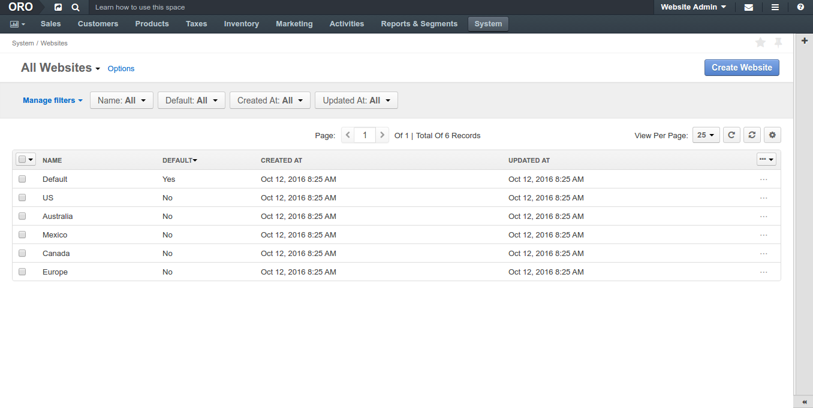
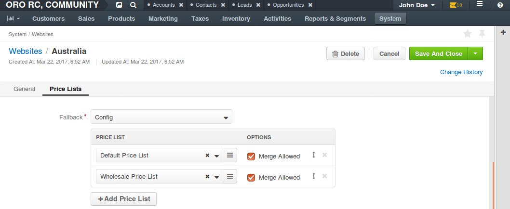

Create a Website¶
To create a new Website in OroCommerce:
Navigate to System > Websites using the main menu.
Click Create Website. The following page opens:

Enter the website name.
In the Price Lists section, configure the following options:
Fallback - specify whether the website prices should reuse the global price list defined in the system configuration whenever the product price is not available in the price list specified for the website.
Price Lists - select the price list to use for this website. You may add multiple price lists using + Add Price List option and specify the priority and merge policy that controls the way price is looked up.
Priority defines in which order OroCommerce walks through the price lists to find a product price. Whenever the price is not found in the higher priority price list, OroCommerce switches to the next one.
To configure flexible price options, set Merge flags for the price lists you would like to combine to cover the most product units. The unit price from the lower priority price list is used when it is missing in the higher priority price list. This mechanism applies only to the price lists where the merge is enabled.
Note
Price list configuration on the customer or customer group level may override the website configuration.
Click Save.
Next steps
- After creating the website in the OroCommerce, ensure that the customer users will navigate to the website in your planned scenarios. Perform the necessary routing configuration, configuration on the web server, or cookie preparation in order to make the website identifiable. For more details on the necessary configuration outside OroCommerce, please refer to the src/Oro/Bundle/MultiWebsiteBundle/Resources/doc/website_matchers.md document in OroCommerce Enterprise github repository.
- Make the necessary adjustments if you plan to host several websites on the same domain, in the sub-folders (e.g. http://store.com/uk and http://store.com/us).
Prepare to Host a Website in the Domain Sub-Folder¶
In OroCommerce, websites may be exposed via different domains, or reside in the sub-folders of the same domain (e.g. the two websites that target the United States and the United Kingdom may be available at the https://us-store.com and https://uk-store.com respectively, or they may be reachable via https://store.com/us and https://store.com/uk).
For the websites with dedicated domains, you may use default OroCommerce installation, where all websites are installed into the web folder of the OroCommerce instance. However, you can move or copy the website to the sub-directory to support the websites with the shared domain (e.g. https://store.com/us and https://store.com/uk).
To prepare files for the website located in the sub-directory (e.g /uk), do the following:
Copy app.php from web directory into the new location (e.g. web/uk/) and modify it to update the relative paths (e.g. adding extra /.. prefix to the path).
For example:
require_once __DIR__.'/../app/AppKernel.php';
should be changed to
require_once __DIR__.'/../../app/AppKernel.php';
Add WEBSITE_PATH parameter to ServerBag before $response = $kernel->handle($request); This parameter value should be the new website folder name.
... $request = Request::createFromGlobals(); $request->server->add([‘WEBSITE_PATH’ => ‘/<yoursitename>’]); $response = $kernel->handle($request); ...
where <yoursitename> is uk in our example.
Now when you use the http://localhost/<yoursitename>/app_dev.php address, the asset files (styles.css, require.js, etc.) are taken from the root folder on the domain instead of the dedicated website sub-folder.